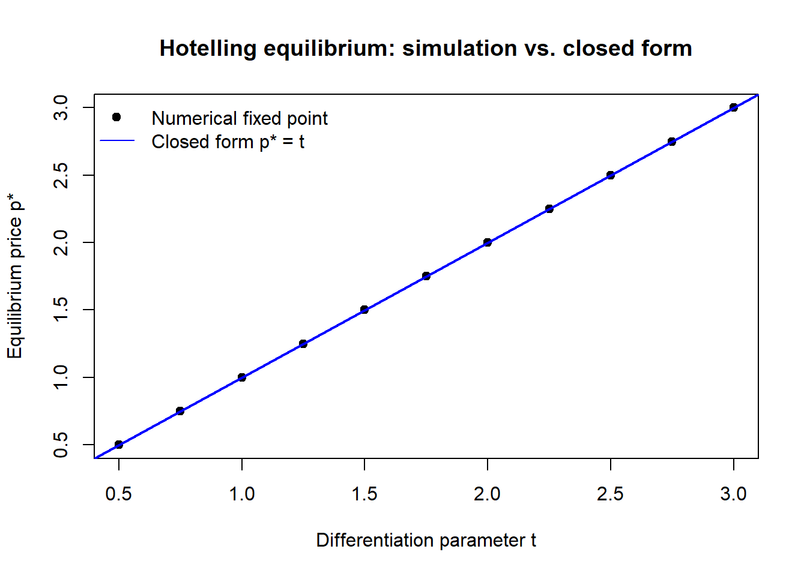

flowchart LR A["Toy model<br/>fully solvable<br/>answers little"] -->|add realism| B["Useful model<br/>captures the<br/>target mechanism"] B -->|add realism| C["Faithful model<br/>intractable<br/>teaches little"] B -.->|comparative statics<br/>validation| D["Theory +<br/>testable predictions"] C -.->|simplify| B
29 Model Building
A model is a deliberately simplified representation of a market, a consumer, or a firm, built to answer a question that the unsimplified world is too tangled to answer directly. Marketing’s analytical models are not pictures of reality; they are instruments of reasoning. A good one strips away everything that does not bear on the question at hand and keeps only the few forces whose interaction the analyst wants to understand—then traces, with the discipline of mathematics, what those forces imply. The payoff is a chain of if–then statements that the unaided mind cannot reliably produce: if consumers have these preferences and firms compete on price, then equilibrium prices rise in product differentiation; if a brand’s utility comes mostly from a brand–attribute interaction, then the brand is less extendable (Chapter 9). The craft of model building is the craft of choosing those few forces well.
This chapter is about that craft rather than about any one model. The substantive models—diffusion, choice, pricing, advertising response—appear in their own chapters; here the object of study is the act of modeling itself. The reader who finishes the chapter should be able to read a formal marketing paper and see the machinery behind the equations: which assumptions are doing the work, where realism was traded for tractability and why, what comparative static the model was built to deliver, and how one would know whether the model is any good. These are skills that transfer across the analytical, the structural-econometric, and the machine-learning traditions, because all three are, at bottom, exercises in disciplined simplification.
The chapter proceeds from anatomy to use. It first defines a model formally and distinguishes the major modeling traditions in marketing. It then takes up the central tension of the craft—tractability versus realism—and the device that makes models say something testable, comparative statics. A worked Hotelling pricing model runs through these sections as a common example, derived in full and then explored numerically. The chapter closes with validation—how a model earns trust—and with the role models play in the slow accumulation of marketing theory.
29.1 What a Model Is
A model has three parts: a set of primitives (the objects assumed to exist and their properties), a set of assumptions (restrictions on how the primitives behave and interact), and a solution concept (the rule that selects, from all logically possible configurations, the ones the model predicts). The output is a set of endogenous quantities—prices, shares, profits—expressed as functions of the exogenous quantities the analyst holds fixed—costs, preference parameters, the number of firms. The art is in the assumptions; everything downstream is deduction.
A model is a logical apparatus for converting assumptions into conclusions. Its value lies not in the literal truth of its assumptions but in whether the conclusions it forces upon us are ones we could not otherwise have reached, and whether they survive confrontation with data.
Consider the canonical example, due to Hotelling (1929): two firms locate on a line of unit length along which consumers are uniformly distributed, and each consumer buys one unit from whichever firm offers the lower delivered price—posted price plus a linear travel cost. The primitives are the consumers, their locations, their common reservation value, and the two firms. The assumptions are uniform density, unit demand, full market coverage, and linear transport cost. The solution concept is Nash equilibrium in prices (Nash 1950): each firm sets the price that maximizes its profit given the other’s price, and equilibrium is the fixed point at which neither wishes to deviate. From this thin description the model delivers a sharp, non-obvious conclusion: equilibrium prices, and hence margins, rise with the cost of travel—that is, with the degree of horizontal differentiation between the firms. Spatial distance on the line is a metaphor; the real content is that differentiation softens price competition, a result that organizes a large empirical literature on positioning.
The stub that previously occupied this chapter sketched exactly this model; the Section 29.4 section below completes the derivation and corrects it, then puts it to work.
29.1.1 Traditions of Modeling in Marketing
Marketing does not have one modeling style; it has several, distinguished by what they take as given and what they let the data determine. Table 29.1 lays out the three that dominate the field, with the trade-offs that send a researcher to one rather than another.
| Tradition | Primitives fixed by theory | What data do | Typical output | Strength / weakness |
|---|---|---|---|---|
| Analytical (game-theoretic) | Preferences, cost, information, timing; equilibrium concept | Often none; or calibrate a few parameters | Closed-form comparative statics, existence/uniqueness results | Transparent mechanism; clean why. Fragile to assumptions; rarely fits data |
| Structural-econometric | Functional forms for utility, cost; equilibrium concept | Estimate deep parameters from market data | Parameter estimates; counterfactual simulations | Policy-relevant counterfactuals. Heavy assumptions; identification-hungry |
| Reduced-form / ML | Minimal; a flexible conditional-mean or predictive function | Carry most of the load | Effect estimates or predictions | Robust, flexible. Silent on mechanism; weak out-of-sample of policy |
The analytical tradition—Hotelling, the spatial-competition descendants Salop and Stiglitz (1977) and d’Aspremont, Gabszewicz, and Thisse (1979), and the marketing-theory program codified by Moorthy (1993) and Lilien et al. (1992)—builds small, fully solved models whose purpose is to isolate a mechanism. The structural tradition writes down a model of the same kind but treats its parameters as unknowns to be recovered from data, then uses the estimated model to simulate worlds that were never observed; the random-utility demand systems of McFadden (1986), the scanner-panel choice model of Guadagni and Little (1983), and the differentiated-products equilibrium of Berry, Levinsohn, and Pakes (1995) are its landmarks. The reduced-form and machine-learning tradition imposes the least theory and lets a flexible function absorb the patterns in the data. The three are complements, not rivals: an analytical model proposes a mechanism, a structural model quantifies it and runs counterfactuals, and a reduced-form study checks whether the mechanism’s qualitative footprint is actually in the data. This chapter’s principles—assumptions, tractability, comparative statics, validation—apply to all three, but they bite hardest in the analytical tradition, where the modeler’s choices are most exposed.
29.1.2 Assumptions and Their Roles
Not all assumptions are alike, and conflating them is a common source of confusion when reading or refereeing a model. It is useful to separate three kinds.
Domain assumptions delimit the world the model is about: unit demand, a single purchase occasion, a covered market. They define scope, and the model makes no claim outside them. Heuristic assumptions are simplifications the modeler believes are false but adopts because they buy tractability while leaving the target mechanism intact—linear transport cost, symmetric firms, a continuum of consumers. Substantive assumptions are the ones the result genuinely depends on, the load-bearing walls; relax them and the conclusion changes. The discipline of model building is to keep substantive assumptions few, explicit, and defended, and to be honest about which simplifications are heuristic. A frequent failure mode is a result that looks like it flows from an innocuous heuristic assumption but in fact requires a strong substantive one smuggled in alongside it.
A famous cautionary tale lives inside the Hotelling model itself. Hotelling’s original claim was that the two firms would locate together at the center—the “principle of minimum differentiation.” d’Aspremont, Gabszewicz, and Thisse (1979) showed the claim was an artifact of the linear-cost assumption: with linear transport costs, pure-strategy price equilibrium fails to exist when firms are close together, so the location analysis that produced minimum differentiation rested on a non-existent price stage. Replace the heuristic linear cost with a quadratic cost and the model delivers the opposite—maximum differentiation. An assumption the field had read as harmless heuristic was in fact substantive, and the headline result reversed when it was corrected. The episode is the standard argument for why a modeler should always ask, of every simplification, which kind of assumption is this, and how would I know.
Friedman’s instrumentalism, and its limits
A model’s assumptions need not be realistic for the model to be useful—what matters, on the instrumentalist view, is the accuracy of its predictions. This is liberating and largely correct for prediction. It is dangerous for explanation and counterfactual policy: a model that predicts well in-sample because two wrong assumptions cancel will give wrong answers the moment a policy change unbalances them. Marketing cares about counterfactuals—what happens if we cut price, change the assortment, enter a market—so realism of the mechanism, not just fit, earns its keep.
29.2 Tractability versus Realism
Every modeling decision is a position on a frontier. At one extreme sits a model so faithful to reality that it cannot be solved and teaches nothing; at the other, a model so simple it is solved on sight but answers a question no one asked. The craft is to sit at the point on this frontier where the model is just rich enough to capture the force under study and just simple enough to be solved, simulated, or estimated. Figure 29.1 renders the trade-off.
Three observations make the trade-off operational. First, realism is not a virtue in itself. Adding a feature that does not interact with the target mechanism buys no insight and may forfeit a closed form; a feature earns its place only if the answer would be wrong or empty without it. Second, tractability is a moving target. A model that resists closed-form solution may yield to numerical solution, and one that resists analytical comparative statics may yield to simulation—so the frontier shifts outward as computational tools improve. The structural tradition exists largely because estimation and simulation pushed the frontier far enough to let realistic equilibrium models meet data. Third, the right point on the frontier depends on the question. A model meant to establish that an effect can exist in principle should be as simple as possible; a model meant to forecast the size of that effect in a specific market must be realistic enough to be calibrated to it.
29.2.1 A Decomposition of Model Error
The trade-off has a precise statistical shadow when the model is used to predict. Let \(\theta\) denote the true data-generating mechanism and \(f(\cdot\,;\theta)\) a target functional of it—a demand elasticity, a market share. A model class \(\mathcal{M}\) produces an estimate \(\hat f\). Its expected squared error decomposes,
\[ \mathbb{E}\!\left[\big(\hat f - f(\theta)\big)^2\right] = \underbrace{\big(\mathbb{E}[\hat f] - f(\theta)\big)^2}_{\text{bias}^2\;(\text{too simple})} + \underbrace{\mathbb{E}\!\left[\big(\hat f - \mathbb{E}[\hat f]\big)^2\right]}_{\text{variance}\;(\text{too flexible})}. \tag{29.1}\]
A model that is too stylized—too far toward tractability—carries bias: it omits forces that matter, and no amount of data removes the resulting systematic error. A model that is too elaborate—too far toward realism, with many free parameters—carries variance: it chases noise, and its conclusions swing with the sample. Minimizing the sum, not either term alone, is the quantitative content of “just rich enough.” Equation 29.1 is the bias–variance trade-off familiar from prediction, but it also disciplines theory: a model with one well-chosen substantive assumption often beats a model with five, because each additional assumption that does not pull its weight adds variance (in fit) or fragility (in mechanism) without reducing bias. The analytical modeler manages this trade-off with judgment; the structural and ML modeler can manage it explicitly through regularization and out-of-sample selection.
29.3 Comparative Statics
A model that produces a single number is inert. What makes a model scientifically useful is comparative statics: the sign and, where possible, the magnitude of the change in an endogenous quantity when an exogenous one shifts. Comparative statics are the model’s predictions—the things that can be confronted with data and that distinguish one theory from another. “Prices rise with differentiation” is a comparative static; it is falsifiable, and it is the model’s actual scientific content. The equilibrium price level on its own is not.
Formally, suppose the equilibrium is defined implicitly by a system of first-order conditions \(\mathbf{g}(\mathbf{y}^\*, \boldsymbol{\alpha}) = \mathbf{0}\), where \(\mathbf{y}^\*\) is the vector of endogenous variables and \(\boldsymbol{\alpha}\) the exogenous parameters. When the Jacobian \(\partial \mathbf{g}/\partial \mathbf{y}\) is nonsingular at the solution, the implicit function theorem gives the comparative static directly, without ever solving for \(\mathbf{y}^\*\) in closed form,
\[ \frac{\partial \mathbf{y}^\*}{\partial \boldsymbol{\alpha}} = -\left(\frac{\partial \mathbf{g}}{\partial \mathbf{y}}\right)^{-1} \frac{\partial \mathbf{g}}{\partial \boldsymbol{\alpha}}. \tag{29.2}\]
This is the workhorse of analytical modeling: it extracts testable predictions even when the model is too complex to solve explicitly, provided the equilibrium exists and is locally unique. The two conditions in italics are not technical bookkeeping—they are the identification of the comparative static. If the equilibrium is not unique, the sign of \(\partial \mathbf{y}^\*/\partial \boldsymbol{\alpha}\) may differ across equilibria and the model makes no single prediction; if existence fails, as it does in the linear-cost Hotelling location game, there is nothing to differentiate. Establishing existence and uniqueness is therefore not a preliminary to the economics; in a comparative-statics model it is the economics.
29.4 A Worked Model: Hotelling Price Competition
The pieces above are best seen at work. This section derives the Hotelling pricing equilibrium in full—repairing the algebra of the earlier draft—then uses it to illustrate comparative statics and, in Section 29.5, validation by simulation.
29.4.1 Setup and Primitives
Consumers are distributed uniformly with density one on the interval \([0,1]\). Firm \(A\) is located at \(a\) and firm \(B\) at \(b\), with \(0 \le a < b \le 1\). Each consumer buys exactly one unit and incurs a linear “transport” disutility \(t\) per unit of distance between her location \(x\) and the firm she buys from. The reservation value \(V\) is common and large enough that the market is fully covered—every consumer buys. The utility a consumer at \(x\) derives from buying from each firm is
\[ U_A = V - p_A - t\,|x - a|, \qquad U_B = V - p_B - t\,|x - b|, \tag{29.3}\]
where \(p_A\) and \(p_B\) are the posted prices. The transport cost \(t\) is the model’s measure of horizontal differentiation: when \(t\) is large, a consumer’s location matters a great deal and the firms are, from her standpoint, poor substitutes; when \(t \to 0\), the firms sell an undifferentiated good and Bertrand logic should drive prices to marginal cost.
29.4.2 The Marginal Consumer and Demand
For prices not too far apart, there is a single indifferent (marginal) consumer at location \(\bar x\) between the firms who is exactly indifferent: every consumer to her left buys from \(A\), every consumer to her right from \(B\). Setting \(U_A = U_B\) with \(a \le \bar x \le b\), so that \(|x-a| = \bar x - a\) and \(|x-b| = b - \bar x\),
\[ V - p_A - t(\bar x - a) = V - p_B - t(b - \bar x). \]
Collecting terms in \(\bar x\),
\[ p_B - p_A + t a - t b = -2 t \bar x \;\;\Longrightarrow\;\; \bar x = \frac{a + b}{2} + \frac{p_B - p_A}{2t}. \tag{29.4}\]
Because consumers are uniform on \([0,1]\), firm \(A\)’s demand (market share) is \(q_A = \bar x\) and firm \(B\)’s is \(q_B = 1 - \bar x\). The earlier draft wrote the first term as \(\tfrac{b-a}{2}\); the correct expression is the midpoint \(\tfrac{a+b}{2}\), which reduces to \(\tfrac12\) in the symmetric case \(a = 1-b\) used below.
29.4.3 Equilibrium Prices
With constant marginal cost normalized to zero, profits are \(\pi_A = p_A \,\bar x\) and \(\pi_B = p_B\,(1 - \bar x)\). Substituting Equation 29.4,
\[ \pi_A = p_A\!\left(\frac{a+b}{2} + \frac{p_B - p_A}{2t}\right), \qquad \pi_B = p_B\!\left(1 - \frac{a+b}{2} - \frac{p_B - p_A}{2t}\right). \]
Each firm chooses its own price taking the rival’s as given (the Nash solution concept). The first-order conditions are
\[ \frac{\partial \pi_A}{\partial p_A} = \frac{a+b}{2} + \frac{p_B - 2p_A}{2t} = 0, \qquad \frac{\partial \pi_B}{\partial p_B} = 1 - \frac{a+b}{2} + \frac{p_A - 2p_B}{2t} = 0, \tag{29.5}\]
and each profit is strictly concave in own price, since \(\partial^2 \pi_A/\partial p_A^2 = -1/t < 0\), so the conditions identify maxima and the best-response system has a unique solution. These first-order conditions are the best-response functions; solving them simultaneously gives the pure-strategy Nash equilibrium
\[ p_A^\* = \frac{t}{3}\,(2 + a + b), \qquad p_B^\* = \frac{t}{3}\,(4 - a - b). \tag{29.6}\]
In the symmetric maximal-differentiation configuration \(a = 0,\ b = 1\), both prices collapse to the textbook value \(p_A^\* = p_B^\* = t\), each firm serves half the market, and equilibrium profits are \(t/2\) apiece.
29.4.4 Reading the Comparative Statics
Equation 29.6 is not the point; the comparative statics are. Differentiating the symmetric price \(p^\* = t\) with respect to the differentiation parameter,
\[ \frac{\partial p^\*}{\partial t} = 1 > 0, \]
which is the model’s central, falsifiable prediction: equilibrium prices and margins rise with horizontal differentiation. As \(t \to 0\) the goods become perfect substitutes and prices fall to marginal cost—the Bertrand limit—recovering a known benchmark and so passing an internal validity check (Section 29.5). A second comparative static reads off Equation 29.6 directly: holding total separation fixed, a firm that moves toward the center (raising \(a+b\) for \(A\), lowering it for \(B\)) gains demand but, through the equilibrium, alters both prices, which is exactly the tension d’Aspremont, Gabszewicz, and Thisse (1979) showed can destroy existence of the price equilibrium under linear costs. The lesson of Section 29.3 is concrete here: the prediction “\(\partial p^\*/\partial t > 0\)” is only as trustworthy as the existence and uniqueness of the equilibrium it is computed at, and those hold in the pricing subgame studied above but fail in the full location-then-pricing game with linear costs.
29.5 Validation
A model earns trust through validation, and validation in modeling is broader than “does it fit the data.” It runs along four lines, ordered roughly from cheapest to most demanding, and a serious modeling paper passes several.
Internal validity asks whether the model is internally coherent and recovers known benchmarks in limiting cases. The Hotelling model’s collapse to Bertrand pricing as \(t \to 0\) is an internal-validity check; so is dimensional consistency, the existence and uniqueness of the claimed equilibrium, and the correct sign of second-order conditions. Internal checks are cheap and catch most errors—including the algebra slip corrected in Section 29.4.
Face and theoretical validity asks whether the comparative statics agree with established theory and with what domain experts believe. A model predicting that differentiation intensifies price competition would fail face validity against a century of industrial-organization theory and would need an extraordinary defense.
Predictive validity asks whether the model’s quantitative predictions match held-out data. This is where the bias–variance decomposition of Equation 29.1 becomes operational: a model is validated not by in-sample fit, which any sufficiently flexible model achieves, but by performance on data it did not see. The structural tradition adds counterfactual validity—does the estimated model reproduce the response to an out-of-sample policy change, such as a price shock or an entry event? Because counterfactual accuracy is what marketing ultimately wants, this is the most demanding test and the one a purely predictive model cannot pass.
The next section illustrates internal and predictive validation by simulating the Hotelling equilibrium, recovering the analytical solution numerically, and confirming the comparative static.
29.5.1 Validation by Simulation
The clearest test that a derived equilibrium is correct is to find it again by a different route. The code below solves the symmetric Hotelling pricing game numerically—by iterating the best-response functions to a fixed point—for a grid of differentiation parameters \(t\), then compares the numerical equilibrium to the closed-form \(p^\* = t\) and confirms the comparative static \(\partial p^\*/\partial t = 1\). Iterating best responses to a fixed point also doubles as a check that the equilibrium is stable, not merely a solved system of equations.
set.seed(28)
# Best-response price for firm A given rival price pB, locations a, b, cost t.
# Derived from the FOC in eq-foc with marginal cost normalised to zero.
best_response <- function(p_rival, own_loc, rival_loc, t, is_A = TRUE) {
share_intercept <- if (is_A) (own_loc + rival_loc) / 2
else 1 - (own_loc + rival_loc) / 2
(t * share_intercept + p_rival / 2) / 1 # p_own = t*intercept + p_rival/2
}
# Solve the price game by iterating best responses to a fixed point.
solve_hotelling <- function(a, b, t, tol = 1e-10, max_iter = 1000) {
pA <- pB <- t # arbitrary positive starting prices
for (i in seq_len(max_iter)) {
pA_new <- best_response(pB, a, b, t, is_A = TRUE)
pB_new <- best_response(pA_new, b, a, t, is_A = FALSE)
if (max(abs(pA_new - pA), abs(pB_new - pB)) < tol) break
pA <- pA_new; pB <- pB_new
}
c(pA = pA_new, pB = pB_new)
}
# Symmetric configuration a = 0, b = 1 across a grid of differentiation levels.
t_grid <- seq(0.5, 3, by = 0.25)
num_price <- sapply(t_grid, function(t) solve_hotelling(0, 1, t)["pA"])
closed_form <- t_grid # analytical equilibrium p* = t
# Internal-validity check: numerical vs analytical agreement.
max_abs_error <- max(abs(num_price - closed_form))
slope <- coef(lm(num_price ~ t_grid))[2] # should equal dp*/dt = 1
cat("Max |numerical - closed form|:", format(max_abs_error, digits = 3), "\n")
#> Max |numerical - closed form|: 0
cat("Estimated dp*/dt (should be 1):", round(slope, 6), "\n")
#> Estimated dp*/dt (should be 1): 1
plot(t_grid, num_price, pch = 19,
xlab = "Differentiation parameter t", ylab = "Equilibrium price p*",
main = "Hotelling equilibrium: simulation vs. closed form")
abline(a = 0, b = 1, col = "blue", lwd = 2)
legend("topleft", legend = c("Numerical fixed point", "Closed form p* = t"),
pch = c(19, NA), lty = c(NA, 1), col = c("black", "blue"), bty = "n")
The numerical fixed point lands on the analytical line to within solver tolerance and the estimated slope is one, so the derivation in Section 29.4 survives the check and the comparative static is confirmed. A discrepancy here would have signalled an algebra error, a coding error, or a failure of existence—precisely the three things internal validation exists to catch.1
29.6 The Role of Models in Theory Development
Models do more than answer single questions; they are the medium in which marketing theory accumulates. Three functions deserve emphasis, because they explain why the field invests in formal models at all rather than reasoning verbally.
First, models discipline intuition. Verbal arguments in marketing are easy to construct and hard to falsify; a force can always be invoked to explain any outcome. A formal model forces every assumption into the open and every conclusion to follow by deduction, which means a wrong intuition can be caught. The minimum-differentiation reversal of d’Aspremont, Gabszewicz, and Thisse (1979) is the paradigm case: a verbal argument that “firms cluster to capture the middle” sounds compelling and stood for half a century, yet the formal analysis showed it depends on an assumption that, once corrected, reverses the conclusion. No amount of verbal reasoning would have located the error.
Second, models generate non-obvious predictions that organize empirical work. The comparative statics a model delivers are hypotheses an empiricist can test, and the best models predict things no one was looking for. A model is most valuable when its implications are surprising and survive testing, because surprise is evidence the model captured a real mechanism rather than encoding what the modeler already believed. This is why the comparative static, not the equilibrium value, is the scientific output (Section 29.3).
Third, models travel. A mechanism isolated in one context recurs in others, and a solved model is a portable unit of theory. The Hotelling logic that differentiation softens competition reappears in product positioning, in geographic competition, in political competition over platforms, and—reinterpreted—in the brand-extension result that a brand whose utility comes from a brand–attribute interaction is less extendable (Chapter 9). The signaling logic that credible signals are differentially costly across types organizes phenomena from brand prominence to specialization to authenticity. Theory accumulates not by piling up facts but by recognizing the same model under many guises, which a formal statement makes possible and a verbal one obscures.
The relationship between models and data is therefore a cycle rather than a hierarchy. A model proposes a mechanism; data confront its comparative statics; the confrontation refines the model—tightening a substantive assumption here, exposing a heuristic one there; and the refined model proposes sharper predictions. The craft of model building is the craft of keeping this cycle honest: choosing assumptions one can defend, simplifying without gutting the mechanism, deriving predictions one can test, and validating against the world rather than against one’s hopes for it.
29.7 Key Takeaways
- A model converts assumptions into conclusions by deduction; its value is the if–then statements it forces, not the literal truth of its premises.
- Separate domain, heuristic, and substantive assumptions, and know which kind each is—a result’s fragility lives in the substantive ones, and mislabeling a substantive assumption as heuristic is how headline results (e.g., minimum differentiation, d’Aspremont, Gabszewicz, and Thisse (1979)) get reversed.
- The tractability–realism trade-off (Section 29.2) has a statistical shadow in the bias–variance decomposition (Equation 29.1): too simple buys bias, too elaborate buys variance, and “just rich enough” minimizes their sum.
- Comparative statics, extracted via the implicit function theorem (Equation 29.2), are the model’s testable content; their validity rests on the existence and uniqueness of the equilibrium, which is part of the economics, not a technicality.
- Validation runs from internal coherence and benchmark recovery through face, predictive, and counterfactual validity; simulation that recovers a closed-form equilibrium (Figure 29.2) is a cheap, decisive internal check.
- Models develop theory by disciplining intuition, generating non-obvious predictions, and traveling across contexts—turning isolated mechanisms into portable, accumulating theory.
Berry, Steven, James Levinsohn, and Ariel Pakes. 1995. “Automobile Prices in Market Equilibrium.” Econometrica 63 (4): 841. https://doi.org/10.2307/2171802.
d’Aspremont, C., J. Jaskold Gabszewicz, and J.-F. Thisse. 1979. “On Hotelling’s "Stability in Competition".” Econometrica 47 (5): 1145. https://doi.org/10.2307/1911955.
Guadagni, Peter M., and John D. C. Little. 1983. “A Logit Model of Brand Choice Calibrated on Scanner Data.” Marketing Science 2 (3): 203–38. https://doi.org/10.1287/mksc.2.3.203.
Hotelling, Harold. 1929. “Stability in Competition.” The Economic Journal 39 (153): 41. https://doi.org/10.2307/2224214.
Lilien, Gary L, Philip Kotler, K Sridhar Moorthy, et al. 1992. Marketing Models. Vol. 803. Prentice-Hall Englewood Cliffs, NJ.
McFadden, Daniel. 1986. “The Choice Theory Approach to Market Research.” Marketing Science 5 (4): 275–97.
Moorthy, K. Sridhar. 1993. “Theoretical Modeling in Marketing.” Journal of Marketing 57 (2): 92. https://doi.org/10.2307/1252029.
Nash, John F. 1950. “The Bargaining Problem.” Econometrica 18 (2): 155. https://doi.org/10.2307/1907266.
Salop, Steven, and Joseph Stiglitz. 1977. “Bargains and Ripoffs: A Model of Monopolistically Competitive Price Dispersion.” The Review of Economic Studies 44 (3): 493. https://doi.org/10.2307/2296903.
The simulation also exposes the model’s edge. As \(t\) shrinks toward zero the equilibrium price falls toward marginal cost, but the best-response iteration slows and the covered-market assumption (every consumer buys) eventually binds; below some \(t\) the assumed interior equilibrium no longer describes the game. A validation exercise that quietly ignored the boundary would over-claim the model’s range.↩︎